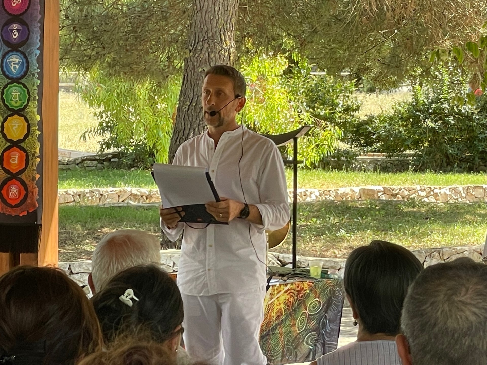
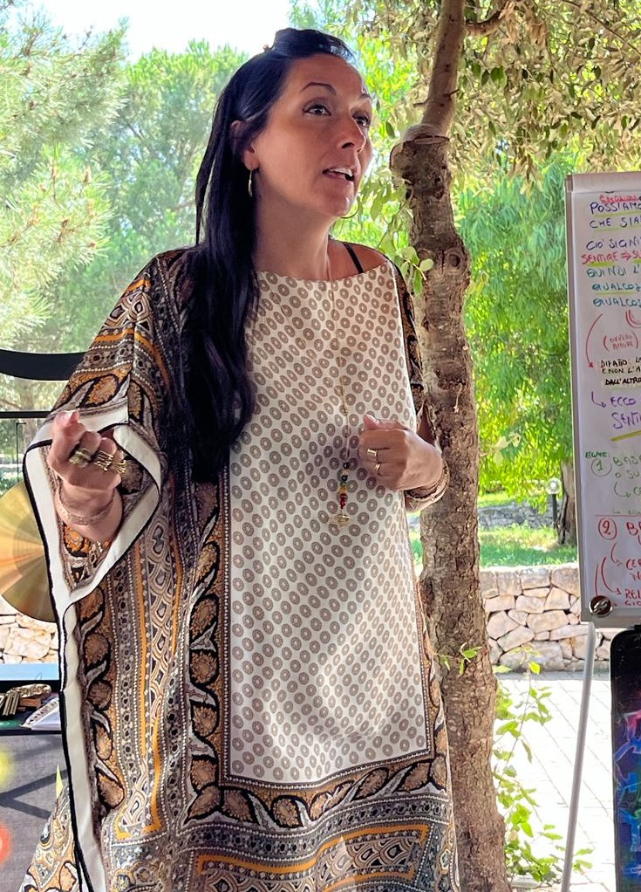
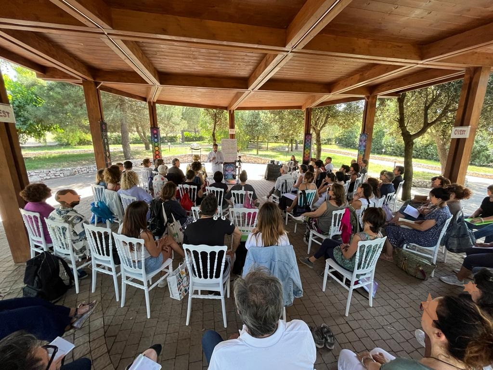
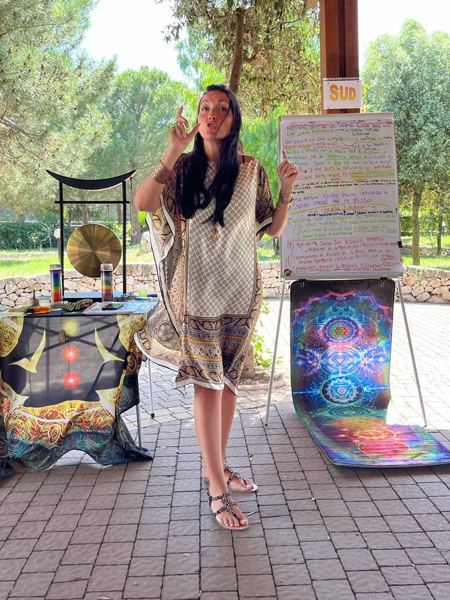
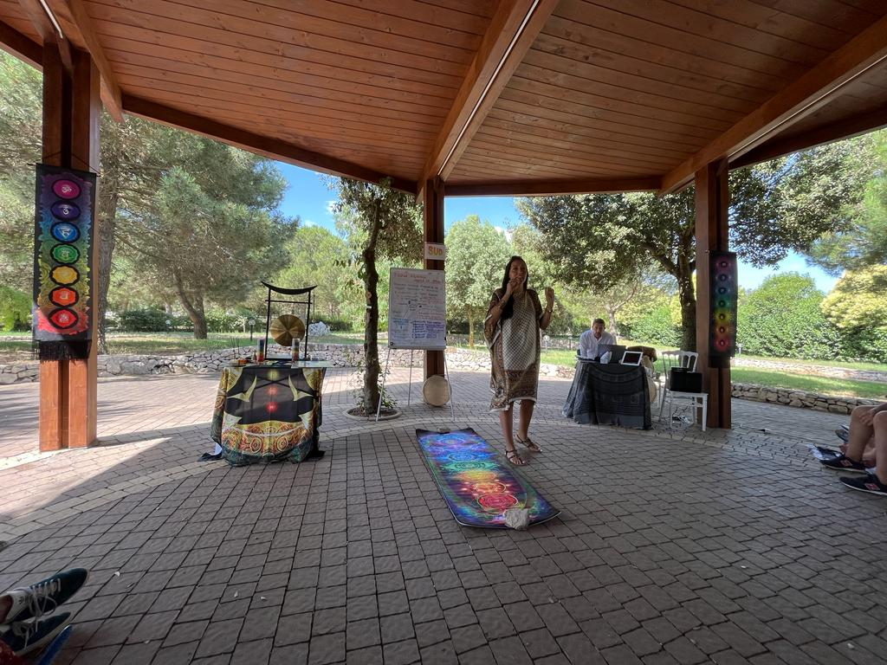
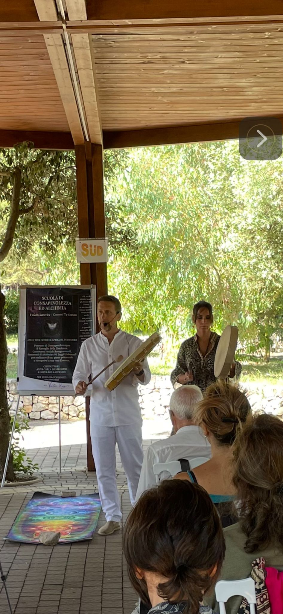
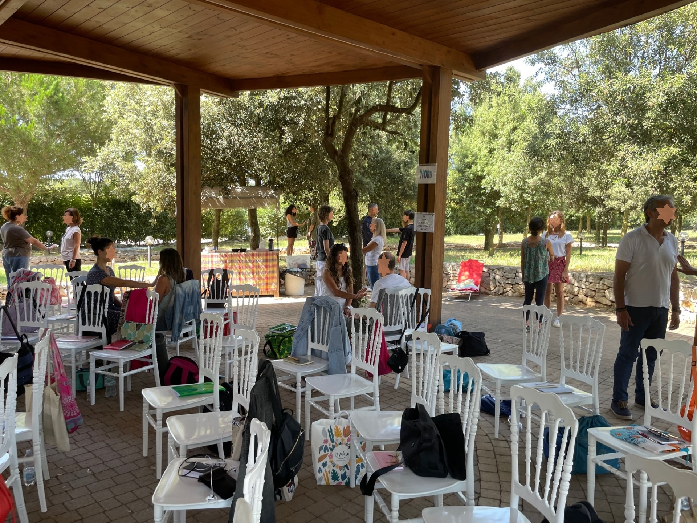
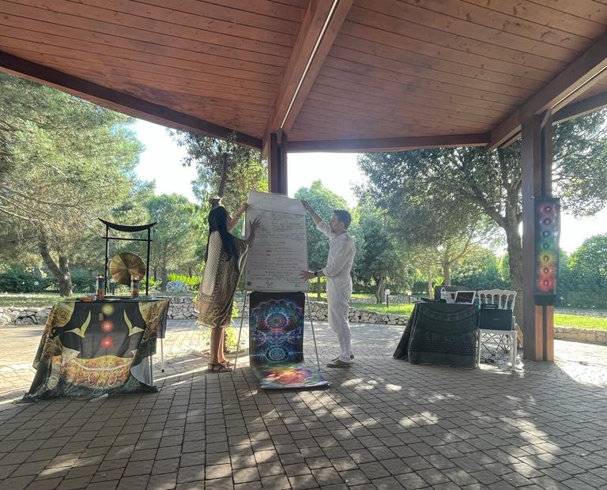
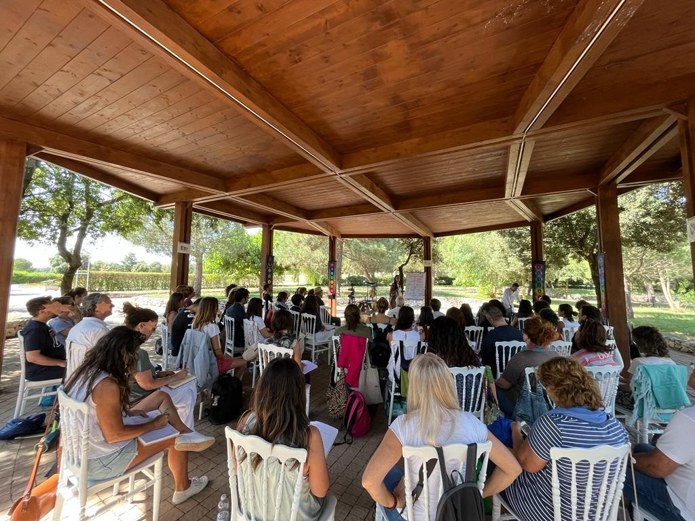
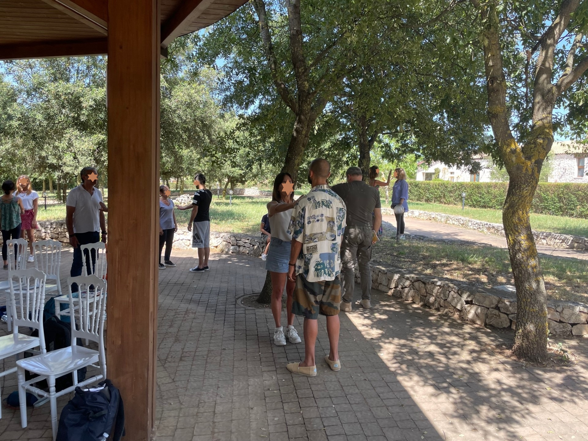

About us
A school oriented towards the awakening of consciousness and the conquest of self-mastery. Our path integrates Ancient Teachings, Alchemy and the 96 Universal Laws to reconnect with the deepest dimension of being: the Soul.
Our starting point is the most ancient of teachings: Γνῶθι Σεαυτόν — Know thyself. The ancients inscribed it on the temple of Delphi because they knew that without self-knowledge there is no true freedom. We live mostly asleep: reacting mechanically, driven by conditioning and fears that we mistake for free choices.
The path of Know Thyself is a path of freedom. Spiritual alchemy teaches us to transmute each of our flaws into its opposite quality — lead into gold — transforming what is mechanical into what is conscious.
Who are we, in depth? If we observe ourselves with sincerity, we discover that we are not a single block but a plurality of voices: like a matryoshka crowded with characters who take turns at the helm of our ship. One says "yes", another holds back, a third judges, a fourth flees. We believe we are choosing, but often it is simply the loudest character making the decision, while the more silent and wounded parts remain submerged.
No man is more of a slave than the one who falsely believes himself free.
— Johann Wolfgang von Goethe
The true work, then, is that of a conductor of an orchestra: knowing every voice, every instrument (how it works, when it activates, what it produces) and learning to make them play together, in a symphony consistent with our most authentic being. The goal is not to eliminate parts of ourselves, but to integrate them. Individuo, from the Latin, means "undivided": something fragmented that we learn to reunify. Only then can we live a life congruent with ourselves and act from within: Aristotle's enérgheia, the pure act of action connected to being. This is true freedom: choosing how to respond to what happens.
The School was created to offer the instruments of this awakening. Not knowledge to accumulate: a daily practice of observation, presence and self-work that allows us to become masters of our own carriage instead of being dragged by it. It is a laboratory in the oldest sense of the word, from the Latin labor, oriented and conscious effort; an effort of the spirit, in which the will of the human being unites with the call to heaven. We live in an age in which we fear that artificial intelligence might escape our control; and yet this is exactly what has already happened, for millennia, with our organic intelligence: the biological machine has taken command, and the Soul can no longer, by itself, disengage the autopilot. Realigning one's gaze with that of the Soul is the first act of freedom.
What at first seems merely an exercise in counteracting mechanicalness, at a certain point becomes a natural attitude: that seed has taken root and become a living plant within us. This is why the School exists: not to give answers, but to provide the instruments with which each person can find their own.
Ancient Teachings
The path draws from diverse traditions: Initiatic Science, Gurdjieff's Fourth Way, Hermetic Magic, Kabbalah, the Enneagram, Anthroposophy, Theosophy, Buddhism, Taoism, Shamanism. Different languages to say the same thing: from the Hindu OM to the Johannine Logos, at the centre there is always a creative sound that gives form to life. The human being is its guardian and co-creator. Their task is to rediscover that programme of the soul, more ancient and deeper than any acquired conditioning.
Structure and access
Seminars are held in person in Bari and online, allowing anyone to access the teachings regardless of their location.
The path spans 7 years (3 foundation + 4 advanced), with regular Sunday sessions. Each year builds on the previous one, accompanying the student through a progressive and rooted transformation.
Introduction video
A look at the School
discover our path
Awareness and Alchemy
What is studied and how we work: the two pillars of the path.
Awareness
- Self-knowledge — lower and higher nature
- Knowledge of the 96 Universal Laws
- Ancient Teachings: Initiatic Science, Fourth Way, Kabbalah, Hermetic Magic, Agni Yoga, Buddhism, Taoism, Shamanism...
- Understanding of Sacred texts (primarily the Gospel)
- Symbolic study of Myth and Archetypes
Alchemy
- Transmutation of lead into gold: Shadow into Light
- Practical training with inner Alchemy exercises
- Application of Universal Laws in daily life
- Transmuting one's daily life
- Becoming conscious creators of one's own reality
The School's path is not linear but spiral: each turn brings us back to the same knots from a deeper level. What was invisible becomes observable; what was observable becomes transformable.
The School's methodPresence and Observation
Only 5% of our life is conscious. The remaining 95% is governed by unconscious programmes, like an autopilot. The first step is to develop the Alchemical Double, the inner Observer: observing without judging. Because time does not heal. Presence does.
Learn more ▾
Meditating not as a practice but as a mental attitude: self-observation, divided attention, unfiltered introspection. Every time we unconsciously yield to a vice, an addiction, an automatic reaction, we are surrendering our sovereignty, the personal power bestowed upon us. Reclaiming it begins with a simple gesture: observing.
The Alchemical Fire
Unprocessed emotions become poisons that intoxicate body, mind and relationships. The Alchemical Fire is born from the friction between inner discomfort and conscious observation: it is the fire that ignites transformation. It is not enough to know; one must become what one knows.
Learn more ▾
The work is similar to postural gymnastics of the mind: loosening the neural pathways of distorted thinking, those hypertrophied ones that make us react as victims, and strengthening the pathways of correct thinking, until the new posture becomes natural.
Our wounds are not merely something to heal: they are the very engine of evolution. But we cannot change our life without having changed our essence, otherwise everything will realign and return as before. What is observed and named loses power. The mechanism does not disappear: it is seen. And when it is seen, one can choose.
Taking Back the Reins
Gurdjieff describes the human being as a carriage without a master: the physical body is the carriage, the emotions are the impulsive horses, the mind is the distracted coachman, and consciousness is the sleeping passenger. As long as the passenger sleeps, the carriage drifts.
Learn more ▾
Self-work consists of awakening it: recognising one's own automatisms, masks, conditioning, and gradually becoming masters of one's own life. No longer victims and slaves of the external, but conscious creators of one's own path.
The Ascent
Ancient tradition describes the soul's journey as a Tree of Life with ten fruits, ten divine attributes that the human being must embody to return to their origin. To do so they must pass through seven initiations and orient themselves by their Soul Ray, the unique note that connects each person to their divine nature.
Learn more ▾
Along the way, the seven wounds of the soul — rejection, abandonment, betrayal, humiliation, injustice, abuse, negligence — are not obstacles but raw material: transmuting them means embodying the corresponding seven spiritual talents and building, piece by piece, one's own Philosopher's Stone.
The journey is not only about shedding what we are not: it is about rediscovering the Verb, the creative word, and using it consciously, with a mind connected to the heart.
Abracadabra — I create as I speak.
A personalised journey, built upon the specific evolutionary goal of whoever undertakes it. It can arise from a moment of crisis, a delicate passage or the drive to accelerate a transformation already underway.
✶ The School
- Structured and shared learning path
- Manifesting one's Soul in daily life
- Ancient Teachings and 96 Universal Laws
- Universal tools of Alchemy and self-observation
- Shared journey with other participants
Individual Path
- Personalised journey focused on your evolutionary goal
- Born from a moment of crisis or a delicate transition
- Working on the Unconscious through targeted sessions
- Illumination of shadow zones
- Intimate and concrete transformation
In the School you work together with others: studying the Laws, training with exercises, and the group serves as a mirror. In the Individual Path you work on a specific knot of your own, with the focused attention of a conductor. Those who attend the School and encounter a deep block can dissolve it in the individual path; those who begin with the individual path often feel the need for a broader framework. This is why they work well together.
The conductors
They have walked for years the path they now teach. They lead individual and group journeys, dedicated to awareness, inner growth and transformative Alchemy.

Anna Carla Digregorio
Conductor & author
With a degree in Pharmacy, for over eleven years she managed a large Parapharmacy in the heart of Bari, transforming it into a centre dedicated to Integrated Health.

Nicolaos Anifantis
Conductor & author
Solid background in industrial pharmaceutical production, combined with a long research path that interweaves science, tradition and spirituality.
For eleven years they worked as entrepreneurs in the pharmaceutical sector, bringing into their profession a principle that already then guided their vision: care should be directed at the human being as a whole, not at the isolated disease. The symptom is always the voice of a deeper imbalance, a misalignment between Soul, mind and body.
That professional path intertwined with years of shared spiritual research: hermetic schools, Christic teachings, the Enneagram, Anthroposophy, Theosophy, Kabbalah, shamanic practices. Different traditions, traversed with rigour and heart, until finding the thread that unites them. Today they transmit what they have received, integrated and lived firsthand, connecting ancient philosophies to frontier sciences in the process of reunification between matter and Spirit.
They offer individual consultations for inner growth and evolution: transmutative alchemy, evolutionary kinesiology, dis-identification from the ego, deep imagery therapy, reconnection with the ancestral Self through shamanic practice and mindfulness.
Since 1994 they have also carried forward a couple soul project: a concrete testimony that Alchemy is not just doctrine, but a reality that is built day by day, in love, in union and in communion. They teach what they live.

Eleonora Digregorio
Collaborator · lessons and experiential workshops
Ambula ab intra — walk from within. Eleonora supports the conductors in lessons and experiential workshops, bringing her own daily practice and a sensitivity matured along the School's path.
Our events
Moments lived together, between teaching and nature.
I 7 Chakra — Amare Sé Stessi
8 Luglio 2023 · Masseria Chinunno, Cassano (BA)










The lesson calendar
Seven years of progressive deepening, structured in annual cycles. Each lesson builds upon the previous one: knowledge is not accumulated — one is transformed into what one studies.
Foundation Cycle · Years 1–3 · 7 sessions per year
The first three years form the foundation of the path. The first year teaches how to recognise the masks, unconscious mechanisms, and automatic reactions — the outermost circle of the Self. The second year goes deeper into the unconscious automatic programmes through the Enneagram: everything that, if not deactivated, risks identifying us with a programme rather than with who we truly are. The third year introduces the Tree of Life and Sacred Geometry, the language through which the universal mind created the proportions of the entire Cosmos, to study the steps of the Soul's ascent, the seven initiations that unlock new states of consciousness, up to the discovery of one's own Soul Ray: the unique note of the soul that guides the journey and reveals one's vocation in the world. By the end of the foundation cycle, the student has acquired the fundamental tools: discernment, presence, and the ability to reclaim their inner sovereignty.
Advanced Years · Years 4–7 · 3 sessions per year
The advanced years delve into Hermetic Magic and the Principles of the Kybalion, the Emerald Tablets, the Astral Wounds (pre-determined trials set by the soul to activate evolutionary movement, transforming each wound into a talent of the spirit) and initiatory Shamanism: a progressive journey towards the christification of the flesh and the realisation of the Self. The seventh year marks the passage from theory to practice: one no longer studies the fire — one enters the fire. Hermetic Magic becomes operative, Hermeticism converges with Shamanism in the Inner Temple, and the practitioner is no longer a student but an adept in transformation who learns to carry the rite into the world.
The book
Anna Carla Digregorio and Nicolaos Anifantis gather in these pages the heart of the School's teachings: a practical path to recognise and dissolve the inner blocks that separate us from our authentic Abundance.

Ricchezza, Abbondanza e Mission
The keys to inner realisation
The universal Laws of prosperity and spiritual evolution become concrete tools to dissolve blocks and release limiting patterns. The archetypal keys and ancient wisdom guide us to recognise Abundance as a natural state to inhabit, not a prize to be won.
"Mira all'Abbondanza interiore, e la Ricchezza nella materia sarà una conseguenza. La Realizzazione non è una meta, ma uno stato dell'Essere." — Anna Carla Digregorio & Nicolaos Anifantis
22 Self-sabotages
The unconscious mechanisms that jam Realisation. Recognising them is the first alchemical act: every limit, seen with awareness, becomes a tool for self-knowledge and a doorway towards its opposite quality.
Among these: the fear of change, the difficulty in receiving, guilt and shame, not recognising one's own worth, limiting beliefs about money, lack of gratitude, confusing commitment with effort, attachment to outcomes, impatience, and disconnection from the material plane.
6 Universal Laws
Authentic Wealth is not conquered — it is welcomed. The Six Laws that sustain Abundance are active forces to attune to: frequencies to embody in one's life, rather than rules to follow.
Law of Gestation, Law of Attraction, Law of Expectation, Law of Letting Go, Law of Abundance, Law of Personal Power.
3 Planetary Archetypes
Uranus, Neptune and Pluto as Symbolic Maps to navigate daily trials and access the three dimensions of Being.
Uranus — Freedom and authenticity
Uranus asks us to free ourselves from what we are not in order to become instruments of what we came to bring. Its trials are sudden changes, epiphanies that force us to abandon old beliefs.
Learn more ▾
Like a bolt of lightning tearing through the sky, it illuminates what was hidden in shadow and reveals a new path. Like a barren tree that suddenly comes back to life.
"La verità vi renderà liberi."
Neptune — Spiritual connection
Neptune asks us to dissolve the selfish and separative ego to remind us that all is One, that every being is part of a single great design. Its trials move along the boundary between spirituality and illusion, demanding discernment.
Learn more ▾
It is the infinite ocean that envelops everything. The mist that blurs the boundaries. A river flowing towards the sea: gradually its waters merge with those of the ocean, losing their separative identity to become part of something greater.
"Cercate prima il regno di Dio e la sua giustizia, e tutte queste cose vi saranno date in aggiunta."
Pluto — Transformation and healing
Pluto asks us to face our own shadows and pass through the inner deaths necessary to bring forth the hidden gold: this is the alchemist's path. Its trials are deep crises, confrontation with the unconscious, the breaking of habits and repeated patterns.
Learn more ▾
It is like the fire of a volcano, invisible to the eye but capable of transforming everything it touches. For years the lava flows deep within the earth, accumulating energy, until a sudden eruption brings it to the surface, destroying the old to create new fertile ground.
"Chi vorrà salvare la propria vita la perderà, ma chi la perderà per causa mia la troverà."
Wealth
What is already within us and manifests outwardly as a reflection on the physical plane. Our intrinsic value is reflected in the world through our actions and our way of being.
Abundance
The potential of all that we can receive and manifest. An inner sense of fullness, a prosperous mindset, a disposition of the soul. It allows us to recognise the beauty and opportunities of life beyond what we possess.
Mission
The beacon that illuminates our path. The unique contribution we can offer the world, the deep purpose for which we are here. Following one's Mission means living in alignment with our most authentic essence.
According to the ancient Vedic texts, Wealth manifests in eight forms. True wellbeing arises from harmony among all these dimensions. Today the scale of priorities is often inverted: we start from the bottom, from material subsistence, forgetting that the highest form of Wealth is inner spiritual knowledge.
1. Conoscenza spirituale interiore
2. Servizio: offrire sé stessi in un progetto di valore
3. Fede e coraggio
4. Fiducia in sé stessi
5. Virtù invisibili: qualità che generano rispetto e onore
6. Relazioni sane
7. Salute e benessere fisico e mentale
8. Sussistenza e economia solida
Presentations & events
6 events including conferences, festivals and presentations
13
Nov 2025
Literary event — IKOS Formazione
Via Giovanni Amendola 162/1, Bari
10
Ott 2025
Free conference — Libreria Roma
P.zza Aldo Moro 13, Bari
27
Set 2025
Macrolibrarsi Fest — Book presentation
Cesena · Conscious book fair
5
Set 2025
School presentation — Il Mondo che Voglio
Palese (Bari)
3
Set 2025
School presentation — Libreria Roma
P.zza Aldo Moro 13, Bari
19
Lug 2025
Festival Harmoniae Mundi — "Dove dimora la Ricchezza?"
Masseria La Gatta Matta, Noci (BA)
What you ask us most often
Answers to the most common questions for those approaching the School.
Why a school? Can't I study on my own?
You can, of course, and every search is precious. But there is a substantial difference. The self-taught person gathers fragmentary information from different books, videos and courses: half-truths that risk never composing into a complete picture. As Gestalt psychology teaches us, when our brain lacks data, it reconstructs them according to the most convenient model, not according to the real map.
A school instead offers a progressive structure, a time-tested method that has been walked for centuries by those who came before us. Like Virgil for Dante, the guides who have walked that path know where one falls, how one rises again, what escapes the eye. If the inner journey is a journey, could you ever reach the destination with an inaccurate map?
Is previous experience or spiritual training required?
No. The path starts from the foundations and accompanies each person from wherever they are. The only requirement is what in alchemy is called the thirst of the soul: that inner drive to know oneself more deeply which, once it arises, gives no peace until it finds an answer. No prior reading or specific skills are needed.
How long is the path and how is it structured?
The School is structured over 7 years: 3 foundation years and 4 advanced years. Even just the first 3 years constitute a complete path. Each year includes 7 lessons in the foundation levels and 3 in the advanced levels, held approximately every six weeks. Lessons take place on Sunday mornings from 9:00 to 13:30.
How much does it cost?
The contribution is €30 per lesson, payable each time. For those who prefer, an annual package is available at €180 instead of €210, with one lesson offered by the School. There are no constraints or obligations: we embody the principle of free choice. You can start, pause, and resume whenever you wish.
Can I follow the lessons online?
Yes. Each lesson is recorded and made available through a private YouTube link, permanently active. You can review the lesson as many times as you wish, at your own pace. The in-person experience naturally remains richer, but the online format ensures anyone can follow the path regardless of where they are.
Can I join even if the lessons have already started?
Absolutely. Thanks to the recordings, you can catch up on previous lessons and join the path at any time. There are no barriers or time-based prerequisites.
What is actually studied?
The heart of the path is the study of the 96 Universal Laws — the laws that govern the macrocosm and the microcosm. But knowledge is only half the work: the other half is alchemical practice, the concrete transmutation of oneself in daily life. Among the tools: the Enneagram, Kabbalah, symbolic study of myths and archetypes, Hermetic Magic, self-observation exercises and guided meditations. Each year builds upon the previous one, creating an organic and progressive path.
Is this a religious school?
No. The School integrates teachings from multiple spiritual traditions — from the Gospels to Eastern wisdom, from Hermeticism to depth psychology, seeking the common thread that unites them. Our approach is that of the reductio ad unum: bringing the plurality of teachings back to a single underlying truth. We do not speak of blind faith, but of a spiritual science to be verified through practice and direct experience.
Contact
If you feel that something in these pages resonates with you, write to us. We will be happy to answer you.
Write to us: we are here.
Thoughts & inspirations
Words that have marked the path. From masters of every age, and from those who walk with the School today.